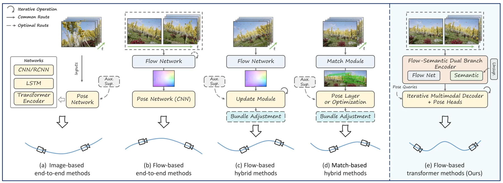
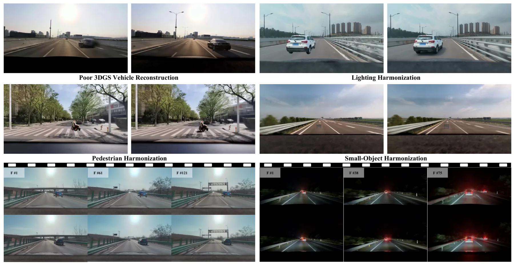
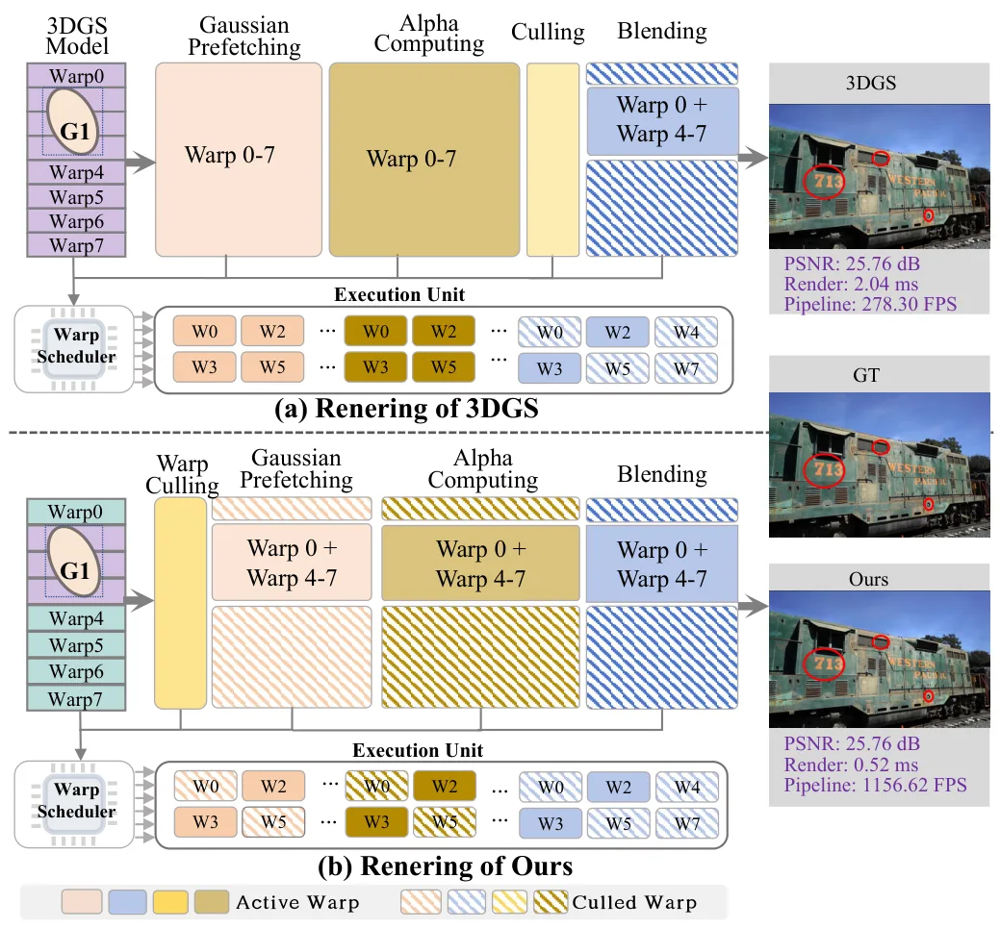
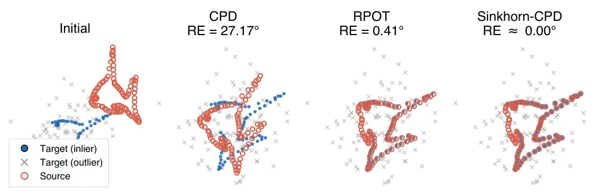
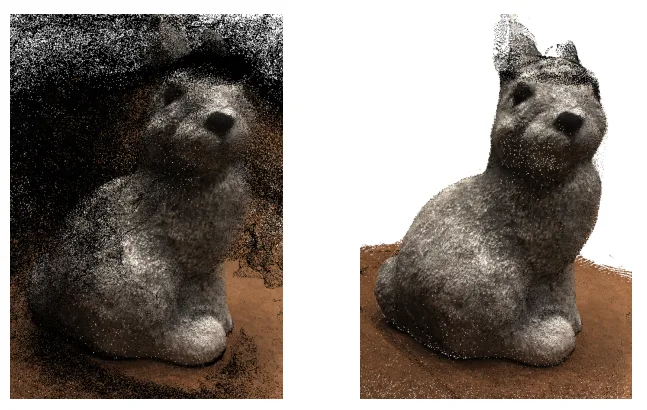
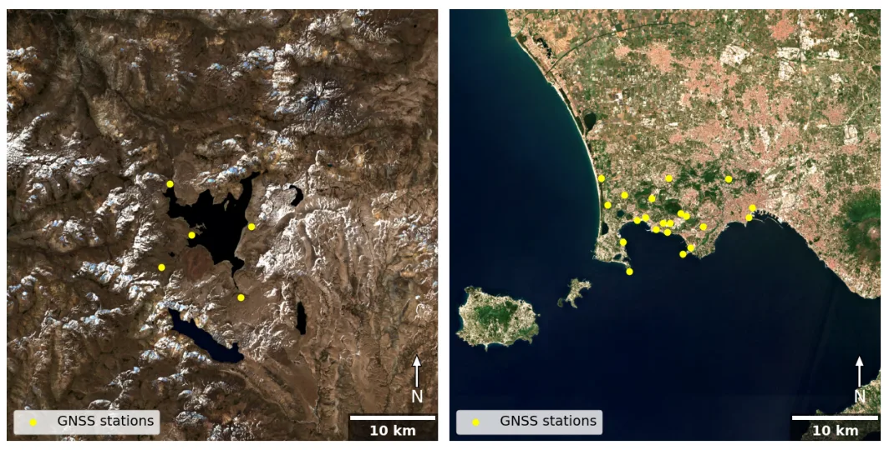
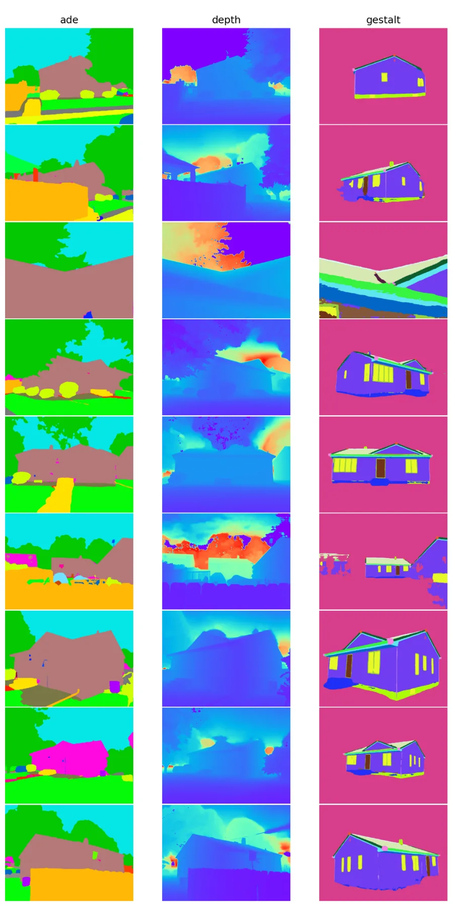

新论文 · 日期 2026-06-16 · score 16 · cs.RO, cs.AI, cs.LG
作者：Jan-Niklas Klein, Sona Ghahremani, Christian Medeiros Adriano, Holger Giese
评分 8.6/10
语义地图Open-VocabularyCLIPRover NavigationRGB-D SLAM
一句话工作总结：CrossMaps 把 CLIP 开放词汇语义、RGB-D 几何置信度和短/长期记忆结合起来，生成可查询的实时 rover 语义地图。
Rover 依赖感知系统维护空间地图，地图不仅需要编码物体语义，也需要编码传感质量，例如测距可靠性、光照伪影和数据密度，从而指导数据融合、语义嵌入更新和部分可观测条件下的导航。CrossMaps 提出一个实时置信感知开放词汇语义建图管线，从 RGB-D 数据构建可自然语言查询的地图。方法继承 VLMaps 风格，集成多尺度 CLIP 嵌入、置信感知融合，以及由短期记忆和长期记忆组成的双记忆架构。短期记忆用几何、语义…
Rovers rely on perception to maintain spatial maps that encode both objects and sensor quality (e.g., range reliability, lighting artifacts, data density), guiding data fusion, embedding updates, and navigatio…

新论文 · 日期 2026-06-15 · score 13 · cs.RO
作者：Yewei Huang, Tixiao Shan, Abhinav Rajvanshi, Niluthpol Chowdhury Mithun
评分 9/10
分布式 SLAMScene Graph多机器人RGB-LiDAR通信高效
一句话工作总结：SGM-SLAM 用物体标签和质心构成 scene graph，通过轻量图匹配产生多机器人间约束，减少分布式 SLAM 通信量。
本文提出一个面向多机器人团队的数据高效分布式 SLAM 框架，机器人装备 LiDAR、相机和惯性传感器。框架用场景图匹配识别机器人间测量约束，不像以往依赖特征级匹配的方法，它只使用物体标签和质心执行 scene graph matching。系统通过融合 RGB-LiDAR 点云构建语义分割点云层和离散有界物体层，并与估计轨迹共同组成场景图。机器人与邻居交换和匹配物体数据，通过多步数据交换与优化过程最大化通信效率。…
We introduce a data-efficient distributed Simultaneous Localization and Mapping (SLAM) framework designed for a team of robots equipped with LiDAR, cameras, and inertial sensors. Our framework uses scene graph…

新论文 · 日期 2026-06-15 · score 13 · cs.CV, cs.RO
作者：Jituo Li, Shunwang Sun, Jialu Zhang, Xinqi Liu
评分 8.4/10
单目视觉里程计Transformer光流语义先验跨域泛化
一句话工作总结：MVOFormer 用光流和语义双分支 transformer 抑制动态干扰并迭代优化位姿，主打单目 VO 的跨域鲁棒性。
单目视觉里程计是自主导航和机器人定位的基础，但既有学习式 MVO 方法常受限于缺少可解释的互补特征，或依赖复杂多阶段架构，导致鲁棒性和跨域泛化能力不足。MVOFormer 提出一种新的 transformer 框架：Flow-Semantic Dual Branch Encoder 融合稠密几何运动线索和物体级语义先验，显式区分静态结构和动态干扰；Iterative Multimodal Decoder 进行由粗到…
Monocular visual odometry (MVO) is foundational to autonomous navigation and robotic localization. However, existing learning-based MVO approaches often struggle with either a lack of interpretable, complement…

新论文 · 日期 2026-06-15 · score 12 · cs.CV
作者：Robert Langendörfer, Markus Hillemann, Markus Ulrich
评分 7.4/10
工业三维重建数据集相机位姿估计SfM/MVSVGGT
一句话工作总结：MVM-IOD 用机器人半球采集工业物体，提供参考位姿和点云，用于比较 SfM/MVS、VGGT、π3 与 2DGS 等重建方法。
工业应用中的三维物体重建和相机位姿估计要求高精度且常受计算时间限制，工业物体复杂形状进一步增加难度。MVM-IOD 提供更贴近真实工业测量的数据：相机安装在工业机器人末端，沿物体周围半球轨迹系统采集图像。数据集包含 9 个典型工业物体、2 种背景共 18 个场景，提供参考相机位姿、参考三维点云和 RGB 图像，可评估基于图像的三维重建、相机位姿估计和新视角合成方法。作者基于 MVM-IOD 评估 SfM、MVS、V…
3D object reconstruction, and camera pose estimation in industrial applications are challenging tasks, as errors are costly while the computation time is often limited. The complexity of typical industrial obj…

新论文 · 日期 2026-06-15 · score 12 · cs.CV, cs.AI
作者：Zhenhua Wu, Yun Pang, Mingkun Chang, Yuwei Ning
评分 6.9/10
3D Gaussian Splatting自动驾驶仿真Sim-to-Real视频修复长尾场景
一句话工作总结：RealityBridge 用多模态控制和长视频训练修复可编辑 3DGS 驾驶仿真视频，重点降低伪影和时间不一致。
面向安全的自动驾驶需要长尾危险场景，但真实采集与复现困难。可编辑 3D Gaussian Splatting 仿真可重建真实驾驶场景并支持可控编辑，但编辑后的 3DGS 渲染视频存在明显 sim-to-real gap，包括渲染伪影、前景资产退化、光照不一致和时间闪烁。RealityBridge 提出结构保持、资产感知的 sim-to-real 框架，使用渲染视频、前景掩码、边缘图和语义掩码等多模态控制，并通过轻量…
Long-tail hazardous scenarios are essential for safety-oriented autonomous driving, yet they are difficult to collect and reproduce at scale. Editable 3D Gaussian Splatting (3DGS) simulation offers a promising…

新论文 · 日期 2026-06-15 · score 10 · cs.CV
作者：Yang Luo, Yan Gong, Yongsheng Gao, Jie Zhao
评分 7.5/10
3D Gaussian Splatting渲染加速GPUWarp Coherence实时重建
一句话工作总结：Local-GS 从 GPU warp 执行一致性角度重排 3DGS 渲染，减少分支和冗余计算，可作为 3DGS 系统的即插即用加速。
3D Gaussian Splatting 已成为实时新视角合成的重要表示，但高斯 primitive 的不规则空间分布常导致 GPU 利用率低下，warp divergence 和冗余计算会降低渲染性能。Local-GS 提出一种 warp-coherent rendering 范式，按照 SIMT 执行边界而非场景几何组织高斯。方法包含三个 warp-coherent 阶段：在 tile level 预计算共享…
3D Gaussian Splatting (3DGS) has significantly advanced real-time novel view synthesis by representing scenes as dense collections of anisotropic 3D Gaussian primitives. However, the irregular spatial distribu…

新论文 · 日期 2026-06-15 · score 9 · cs.CV
作者：Jin Zhang, Mingyang Zhao, Bing Liu, Xin Jiang
评分 7.7/10
点云配准Coherent Point Drift最优传输Sinkhorn离群点鲁棒
一句话工作总结：Sinkhorn-CPD 用非平衡 OT 允许点云两侧丢弃离群质量，同时保留 CPD 闭式更新，提高低重叠和重离群配准鲁棒性。
Coherent Point Drift 因软对应和闭式参数更新被广泛用于刚性点云配准，但其目标侧边缘约束会强迫每个观测点，包括离群点，接收单位概率质量，在重离群和部分重叠场景下会降低精度。Sinkhorn-CPD 用双 Kullback-Leibler penalty 替换 CPD 的目标侧边缘约束，允许算法在源和目标两侧丢弃离群质量，形成完全非平衡的熵正则最优传输问题，并可用 generalized Sinkh…
Coherent Point Drift (CPD) is widely used for rigid point cloud registration because of its soft correspondences and closed-form parameter updates. However, CPD's target-side marginal constraint forces every o…

新论文 · 日期 2026-06-15 · score 7 · cs.CV, cs.AI
作者：Markus Hillemann, Robert Langendörfer, Steven Landgraf, Markus Ulrich
评分 6.9/10
VGGT不确定性估计三维重建质量DTUFeed-forward Geometry
一句话工作总结：该工作评估 VGGT 输出置信度在 DTU 上的可用性，寻找过滤阈值，为 feed-forward 三维重建的质量控制提供依据。
VGGT 因 CVPR 2025 Best Paper 获得大量关注，与 DUSt3R 和 MASt3R 类似，它试图用统一的 feed-forward 网络替代 bundle adjustment 和特征匹配，直接从多张图像预测相机位姿、深度图和稠密三维结构，并可在一次前向传播中一致处理任意数量视图。对于摄影测量，高精度之外，高质量 uncertainty estimate 也很关键，因为它能建立信任并支持质量保…
Visual Geometry Grounded Transformer (VGGT) has already attracted a great deal of attention in a short period of time, not least due to the Best Paper Award at CVPR-2025. Similar to DUSt3R and MASt3R, VGGT aim…

新论文 · 日期 2026-06-15 · score 6 · cs.CV
作者：Robert Popescu, Juliet Biggs, Tianyuan Zhu, Nantheera Anantrasirichai
评分 5.8/10
InSARGNSS 验证大气校正DINOv3火山形变
一句话工作总结：WaveDINO 用 DINOv3 特征和地形条件做 InSAR 大气校正，并用 GNSS 形变观测验证去噪后结果。
InSAR 能有效监测火山形变，但观测常被大气相位延迟、季节性地表变化和 decorrelation 污染。传统数值天气模型校正方法能降低部分影响，但未必稳定去除大气伪影，并可能引入残余偏差。WaveDINO 提出一种学习式 unwrapped InSAR interferogram 去噪方法，采用物理动机合成形变与真实大气噪声结合的混合训练策略。框架使用 wavelet 多尺度去噪，并以冻结 DINOv3 fou…
Interferometric Synthetic Aperture Radar (InSAR) enables effective monitoring of volcanic deformation; however, the observed signals are often corrupted by atmospheric phase delays, seasonal surface changes, a…

新论文 · 日期 2026-06-12 · score 4 · cs.CV
作者：Nitiz Khanal
评分 6.2/10
3D WireframeCOLMAP 点云DETR结构化三维重建S23DR
一句话工作总结：WireframeDETR 从 COLMAP 点云直接预测建筑 3D wireframe 边集合，用对比去噪稳定 DETR 式 Hungarian matching。
本文介绍 WireframeDETR，作者提交给 S23DR 2026 Challenge 的技术报告。任务是从多视角 COLMAP 点云预测三维建筑 wireframe。方法将 DETR 风格 set prediction 直接应用于三维点云，把 wireframe 表示为边坐标对集合，不需要中间顶点检测阶段。三项技术贡献包括：用 contrastive denoising training 稳定早期 noisy…
We present WireframeDETR, our submission to the Structured Semantic 3D Reconstruction (S23DR) 2026 Challenge, which requires predicting a 3D building wireframe from multi-view COLMAP point clouds. Our method a…